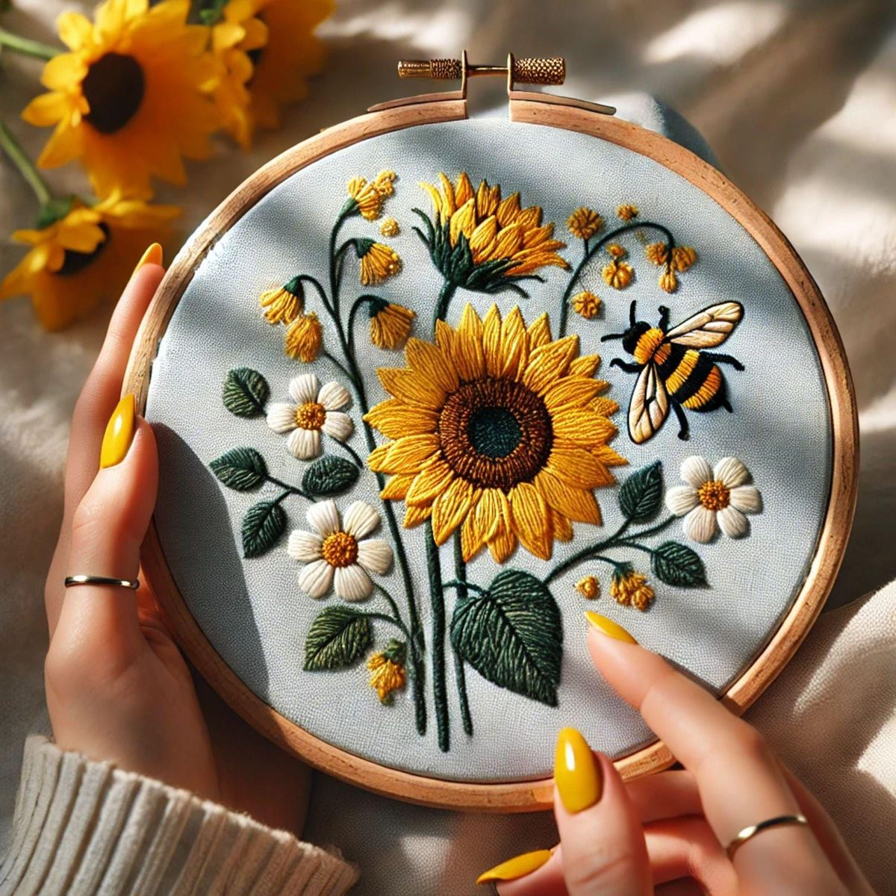

Welcome to Our Unique Handmade Gifts For Your Loved Ones
At Stitching Corner, we specialize in creating customized and unique handmade gifts that bring warmth and joy to your loved ones. Each piece is designed with care using quality fabrics, linens, and colorful threads — perfect for birthdays, anniversaries, or any special moment. Here, you can explore a variety of beautifully stitched products, from elegant hoops to personalized embroidery art, all crafted to make your day more meaningful.
